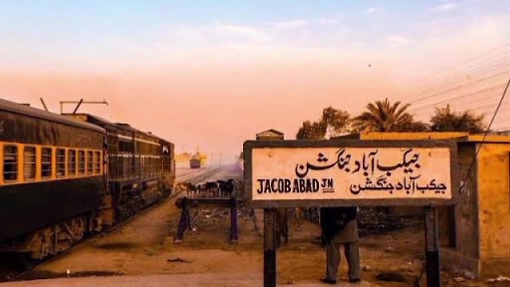

Transport 01Jacobabad Railway Station
The city's rail junction (station code JCD) — trains, palm trees and a dusty pink dusk sky, with the bilingual "Jacobabad Junction" sign that greets every arrival.
🗺 View on map
📖 Tap card for full story